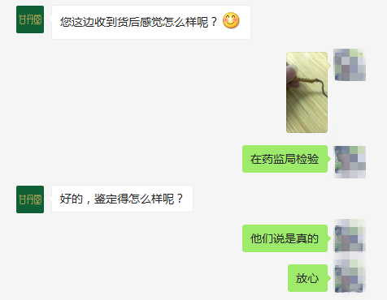

- 想全面了解虫草
- 长按复制下方 ↓ ↓ ↓ 微信号
- 微信号: gdt556 ( ← 长按可复制 )
- 西藏那曲资深虫草师
- 免费帮你鉴别虫草真假
- 教你如何买到正宗好虫草
- 教你虫草怎么吃省钱有功效
每天加微信的前10名 免费领取价值3000元虫草礼品1份
大家好！我叫强巴，西藏那曲资深虫草人及品鉴师。家里三代行医，从小与中药相伴，8年前有缘来到西藏那曲，接触到纯正野生的冬虫夏草，本着将那曲野生冬虫夏草带给有需要人的愿心，开启西藏那曲虫草搬运工的人生。
为了能让广大的朋友能够更好的去辨别虫草的真假以及更深入的了解虫草的知识和功效，以此文章分享给大家，希望广大朋友能够转发、收藏，让更多的人了解到虫草 ↓ ↓ ↓
- 点击进入
- 查看虫草功效直播
- 西藏那曲资深虫草师
- 带你探索虫草价值所在
- 可长按复制 ↓ ↓ ↓ 微信号
- 我的微信号: gdt556 ( ← 长按可复制 )

冬虫夏草，别称"冬虫草"，是冬虫夏草菌和蝙蝠蛾科幼虫的复合体，也是“中药之王”，对人体起到全面的保健作用，具有很高的食疗功效。
原生态养生，释放最全面最高效的健康滋养
↓ ↓ ↓
冬虫夏草向来是中国的名贵进补食材，与人参、鹿茸一起列为中国三大贡品，在古代，不但宫廷皇族天天进食虫草，连官宦家族也经常食用，这也是皇族和官宦成员长寿的原因。
冬虫夏草的好处有很多，三天三夜都说不完。虫草对特殊人群，某些特殊的情况有很不错的效果。
想要了解更多的朋友可以加下方微信进行咨询 ↓ ↓ ↓
温馨提示：
1.每天加微信的前10名 免费领取价值 3000 元虫草礼品1份
2.想要了解更多虫草知识和更多优惠活动，请长按复制微信号添加好友，更多优惠等着你 ↓ ↓ ↓
- 虫草具有非常丰富的营养价值
- 针对不同人群功效不同
- 想要知道怎样的吃法最适合您
- 可长按复制 ↓ ↓ ↓ 微信号
- 我的微信号: gdt556 ( ← 长按可复制 )
- 西藏那曲资深虫草师
- 教您如何养生
根据不同人群，虫草的吃法也会不同，吃的对了，效果自然事半功倍，营养就越高。
贵是其次，效果才是硬道理
↓ ↓ ↓
我们的西藏那曲冬虫夏草，都是出自同一产区，把冬虫夏草精分为三个级别：
一级虫草（2根/克）
单根重量在0.5克以上。这样的冬虫夏草体形饱满，产量 非常稀少 ，多数是寄主蝙蝠蛾幼虫在5龄以上的草，体内富含营养物质和有效成分，非常难得，是 档次最高 的品级，特别适合做为礼品 馈赠亲友 ，也是 滋补身体的圣品 。
二级虫草（3根/克）
单根重量在0.3到0.4克之间。就是“三条一克”标准。这种冬虫夏草 品相好 、 品质高 ， 性价比高 ，兼具 送礼和自用 的价值。
三级虫草（4根/克）
单根重量在0.25克左右。就是“四条一克”标准。品相与饱满度相对一二级草略低些，但 营养价值 一样，一般家庭 长期保健 是最合适不过的选择。
虫草有效吃法攻略
冬虫夏草开水泡服
用法：取虫夏3-4根左右，清水冲洗，放入杯中，用90摄氏度左右开水冲泡，饮用若干次直至睡前，将虫草全部咀嚼吃入。
特点：虫草功效及本身质量不衰减，针对性强，人体吸收较好。

雄鸭虫草汤
配方：老雄鸭一只，虫草20根，野生枸杞20克，生姜10克，盐、葱、味精适量。
用法： 将鸭去杂、洗净剁块，与虫草及其他原料炖煮至熟烂，服用。
冬虫夏草泡酒
配方： 选用优质的白酒，一斤酒泡5-10克虫草，泡七天以上就可以饮用。
特点： 适合中老年人，平时滋补使用。
想要了解更多有效虫草食谱，长按复制下方 ↓ ↓ ↓ 微信号，冬虫夏草营养师为您定制完美有效的食谱
- 每周定期分享虫草食谱攻略
- 教你不同的时节对应不同吃法
- 事半功倍的吃出虫草效果
- 吃出虫草的花样美味
- 我是西藏那曲资深虫草师
- 可长按复制 ↓ ↓ ↓ 微信号
- 我的微信号: gdt556 ( ← 长按可复制 )
虫草好不好，必须从这三个方面做综合判断： 产地 —— 海拔 —— 营地 。
虫草主要产地有：西藏、青海、四川。不同产地的虫草营养价值不同。从大方面讲，青海产量第一，但最好的虫草在西藏那曲，那曲虫草被誉为 “黄金草” ，国家地理标志保护产品。连续数年蝉联虫草冠军宝座，优良的品质获得世界的认可。
不是所有虫草都叫那曲野生雪域虫草
↓ ↓ ↓
1.处在西藏那曲虫草的虫草 表面黄净 的，不管是 个头大小 ，它们的色泽度都是比较均匀的。而其他地区的虫草，色泽度会有些淡有的地方会偏红或者偏灰或者是白润色。
2.西藏那曲虫草在体型上也呈现出比较 圆润 ，整体看上去很 饱满 ，尾宽均为5cm, 其他地区的虫草体型会比较瘦小。
3. 西藏那曲虫草自带有种 酥油的香味 ，这是那曲虫草独有的 自带草味 ，其他地区的虫草，草味没有那曲虫草那么浓。
温馨提示：
1.每天加微信的前10名 免费领取价值 3000 元虫草礼品1份
2.想要了解更多虫草知识和更多优惠活动，请长按复制微信号添加好友，更多优惠等着你 ↓ ↓ ↓
- 8年来我们只专注一件事
- 就是把那曲的优质虫草带给有需要的人
- 希望每一个人都将康长寿
- 想要了解更多虫草知识的朋友
- 可长按复制 ↓ ↓ ↓ 微信号
- 我的微信号: gdt556 ( ← 长按可复制 )
- 我是西藏那曲资深虫草师
多年来我们的每一根虫草都来自西藏那曲高海拔区域，从那曲当地藏民手中直接收购， 把价格压缩到市场价的50%， 层层筛选，严选品质,每一根都由我精心挑选，绝无掺杂其他产地品种或次级虫草，保证所有冬虫夏草「 地道纯正 」，不忘初心，只为将营养价值最好的西藏那曲虫草带给客户,极力造福更多人。我们尽全力让虫草远离“天价”的标签，但要很便宜，绝对没办法。
每一根都是藏民辛苦采挖 ， 直接采收 ， 没有任何中间环节
↓ ↓ ↓
我们的每一根虫草都是藏民们辛苦挖来的，他们需要 弯腰 或 趴着 、 跪着 ，在地上一点点前进找虫草，一天下来也就挖 二十根左右 ，经验不足的人有时一天下来都找不到十根。好虫草是 越来越少 了；而且找一天虫草下来 脚又酸又麻 ，常年下来，藏民们都会有不同程度的 风湿 问题。
冬虫夏草乃 “中药之王” ，具有非常高的食疗功效，对人体起到全面的保健作用，虫草越好营养成分就越高，顶级的那曲虫草， 一根顶普通虫草六根 。
如有需要的朋友可以加我微信，更多优惠价格等你来拿
我们承诺，每一根虫草都是西藏高海拔的野生虫草，从西藏源头 直接采摘收购 ，每一根都是经过 精心挑选 的，无掺杂其他产地品种或次级虫草, 如有假货，全额退款 ！
据我所知，在西藏像我们这样直接源头收购的，没有几家！

- 如何辨别虫草真假
- 西藏那曲资深虫草师为您辨真假
- 可长按复制 ↓ ↓ ↓ 微信号
- 我的微信号: gdt556 ( ← 长按可复制 )
- 帮您免费鉴别虫草
- 让您更省心
虫草产地不同，品质不同，价格不同。在通常人们所能认识到的冬虫夏草中，西藏那曲冬虫夏草是最好的虫草，产地海拔、品质和品象都是最佳的。
优质那曲虫草，你值得信赖
↓ ↓ ↓
根据我多年辨别虫草的经验，总结出以下 三点 ，确保虫草质量！
观：八对足、头部颜色浅、消化腺、缺一不可
尝：细嚼甘甜中路带一咸，吃完口中留有余香
嗅：稍带有虫体的腥燥味及掺杂着草菇的香气

市场上的虫草假冒伪劣手法层出不穷，不会辨别的朋友很容易上当受骗，为了不让你们买到劣质虫草，我朋友圈会一直更新虫草真假优劣的辨别方法，想要了解的朋友可加微信进来了解 ↓ ↓ ↓ 。
温馨提示：
1.每天加微信的前10名 免费领取价值 3000 元虫草礼品1份
2.想要了解更多虫草知识和更多优惠活动，请长按复制微信号添加好友，更多优惠等着你 ↓ ↓ ↓
- 西藏那曲资深虫草师
- 每周定期直播讲解虫草相关知识
- 教你如何挑选优质虫草
- 可长按复制 ↓ ↓ ↓ 微信号
- 我的微信号: gdt556 ( ← 长按可复制 )
添加微信号: gdt556 ( ← 长按可复制 )，确认购买信息。
24小时内发货，全国包邮。
在收到货后如有任何不满意，我们支持无理由退换货；不满意:退 / 不喜欢：退 / 不想要：退 / 品相不好：退
添加微信，如有什么问题，我们都可以为您解答！
凡是在我们这购买过的，将成为我们的VIP会员，享受活动优惠价,如有优惠活动，我们将会第一时间通知您。
温馨提示：
1.每天加微信的前10名 免费领取价值 3000 元虫草礼品1份
2.想要了解更多虫草知识和更多优惠活动，请长按复制微信号添加好友，更多优惠等着你 ↓ ↓ ↓
- 我们认真对待每一位客户
- 实拍发货过程给客户
- 严格把关产品质量
- 为每一位有需要的人保驾护航
- 我是西藏那曲资深虫草师
- 可长按复制 ↓ ↓ ↓ 微信号
- 我的微信号: gdt556 ( ← 长按可复制 )
如果您在虫草方面，有任何需要了解的问题，可以第一时间找我为您解答，期待您的提问。同时，我希望大家都能学会如何去辨别虫草优劣，劣质虫草 伤钱伤身 ，抵制劣质虫草，从我做起，恳请大家监督：

热门评论
周大叔
2018-08-27
虫草不错，吃了几个月感觉身体好多了。
推荐 452 / 回复
世事无常
2018-08-27
上一年有了胃癌，化疗后身体都虚弱了很多，用了你家虫草吃了3个月，感觉精神好多了。
作者：谢谢您对我家虫草的支持，冬虫夏草具有抗癌的效果，而且对于术后/化疗的病人有着不错的滋补作用呢！
推荐 865 / 回复
我有我家宝宝
2018-08-27
老公身体差，肾不好，经常尿不停。悄悄给他买了50克来吃，现在身体比以前好多了
作者：草的功效有很多，主要有防癌抗癌，抗肿瘤，调节肝，肺，心脏，呼吸系统，免疫系统和造血功能，提高细胞能量，缓解疲劳，改善睡眠，降三高，补肾壮阳等都有明显的效果哦。
推荐 821 / 回复
Elaine
2018-08-27
去药监局检验，是真的虫草，一直以为网上的不靠谱，没想到你们家那么好，下次再来购买
作者：我们的虫草一直都是发源地收草，给到每一个顾客手上的虫草都是经过精挑细选的呢。
推荐 821 / 回复
杰鑫
2018-08-27
买了200克虫草去见岳父，岳父看到虫草后笑得可开心了，看来高档滋补品送礼一流啊。
推荐 1221 / 回复
风平浪静
2018-08-27
这家的虫草质量真的很不错，我之前也在别家买过，但是性价比是这家最高的，还会继续购买的
作者：嗯嗯，感谢您的支持，我们只做精品不做通货哦！
推荐 350 / 回复
流金岁月
2018-08-27
为了生意，不得不经常应酬、熬夜，导致肝脏出现问题，自从在楼主这里买了虫草，一直坚持吃到现在，虽然熬夜、应酬还是免不了，但是身体一直很好，感谢虫草，感谢楼主
作者：工作在忙也要注意好身体，除了要定期进补以外，饮食作息也要多多注意哦！
推荐 916 / 回复
敷衍不如拒绝
2018-08-27
老人家身体不太好，特别是生病后，特别虚弱，作为女儿我非常心疼，对比了多家虫草商家以后，还是选择在强巴大哥这里买，虫草果然没让我失望，非常赞！
作者：看到我们家的虫草可以帮到你们真的是太开心了，扎西德勒。
推荐 683 / 回复
拈花惹草
2018-08-27
其实这个我也不懂，但是对比之前淘宝上买好像要好些，我老公也说不错，就是价格高了一点
作者：好的虫草都是不便宜呢，我们除了在原产地收草以外，还要经过2轮的挑选，无论是质量还是效果都是有保证的，希望您吃好了可以继续订购哦。
推荐 663 / 回复
Jansoo
2018-08-27
买来送老婆的，虫子纹路很清晰，包装也不错，但是老婆不敢吃，没办法
推荐 593 / 回复
无忌
2018-08-27
以前应酬多了，身体也一天不如一天，总感觉很累，后来朋友推荐你家虫草，感觉效果还是可以的
推荐 1593 / 回复
Demo
2018-08-27
终于等到楼主发帖分享啦，顶一个！！我们家一直比较注重健康养身，吃楼主家的野生虫草2年了，滋补效果很好，家里老人身体好了很多！良心卖家，赞赞赞！
推荐 975 / 回复
海
2018-08-27
刚加了微信，长知识！虽然还没买虫草，可是跟店家咨询了很多关于虫草的知识，店家人很好，很有耐心，强烈推荐需要虫草的朋友加他微信。
推荐 1209 / 回复
暗夜
2018-08-27
懂行的朋友说是真品，这个价格很划算
推荐 695 / 回复
漫漫
2018-08-27
爸爸的身体不太好，买回去送给爸爸，希望他用了对身体有好处。。。
推荐 756 / 回复
往事如风
2018-08-27
经常吃虫草，所以对虫草的品质很挑剔，一般认准了一家就不会换的,你家的诚信跟品质一直都保持得很好，价格也算比较实惠，性价比也高，包装很用心，有需要的朋友可以放心购买
推荐 1005 / 回复
人生如戏
2018-08-27
虫草大小均匀，是正品，干净饱满，口感很好，有菌菇味，价格实惠很划算，卖家服务很划算
推荐 293 / 回复
syh
2018-08-27
之前晚上一直失眠，用了这个后就再也没有了，睡得很踏实，失眠的朋友可以试下。
推荐 857 / 回复
华少
2018-08-27
这家的虫草确实不错，大小均匀，饱满圆润，气味正宗，再次感谢朋友圈全面的真假辨别反馈，野生虫草已收到
推荐 703 / 回复
以拉到最低了呦 ↑ ↑ ↑